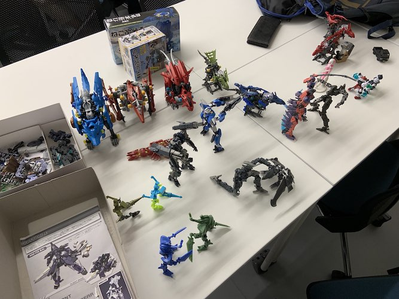
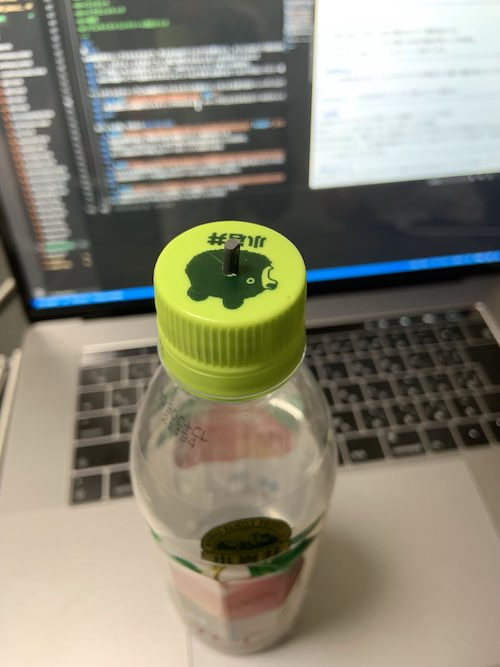
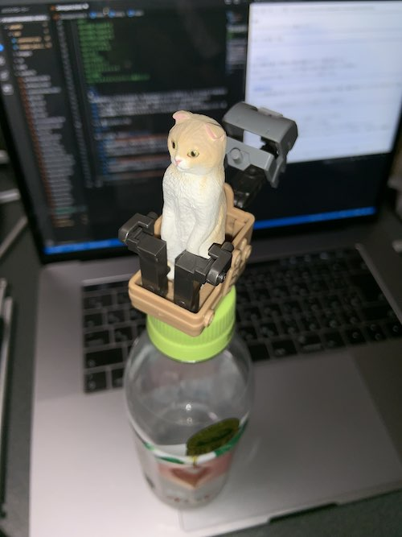

<!DOCTYPE html>
<html lang="ja" dir="ltr">
  <head>
    <meta charset="utf-8">
    <title>3mmjoint</title>
    <link rel="stylesheet" href="./assets/css/common.css">
  </head>
  <body>
      <header>
          <input type="checkbox" id="cp_navimenuid">
          <label class="menu" for="cp_navimenuid">
          <div class="menubar">
            <span class="bar"></span>
            <span class="bar"></span>
            <span class="bar"></span>
          </div>
          <ul>
          </ul>
        </label>
      </header>

  <main>
    3mmジョイント<br>
    組み換え玩具で業界標準となっている3mm軸ジョイントについて掘り下げる。
    
    <br>組み換え玩具では実質的な業界標準として3mm軸のジョイントがよく使用されています。
    <br>これによりシリーズもメーカーも様々な玩具を組み合わせて遊ぶことが出来るようになっています。
    <br>これについて調べてみると、特に規格やメーカー間の約束事があるわけでなく、各々が3mmを採用して現状の"実質的な業界標準"が出来たようです。
    <br>今回この3mm軸を軸に展示会を開きたいのですが、展示会に来るのは玩具や模型を触る人だけではありません。
    <br>なので今回は「3mm軸を使ってこういう新しい玩具を作る」ではなく
    <br>「この3mmジョイントについて、玩具以外のステージで、生活を便利に出来ないか」という視点で展示会を作っていきたいなと思います。
    <!-- 以下資料
    <br>
    <br>
    <br>USB-TypeAオス
    <br>USB-TypeAメス
    <br>USB-typeCオス
    USBメモリをおもちゃでカスタム
    <br>Lightning
    <br>ペットボトル
    <br>ネジ
    <br>(SATA)
    <br>コンセント
    <br>イヤホンジャック
    <br>磁石
    <br>プレキャストコンクリート用のフック
    お皿

    -->
    <hr>
    <br><br><hr>
    案<hr>
    元々は3mm軸を使って「身の回りの物を玩具のパーツとしてつける」構想をしていた。(シャーペンをビーム砲にみたててゾイドに付けるアダプタなど)
    <br>玩具に日常"を"持ち込むのではなく、玩具を日常"に"持ち込む。
    <hr>
    3mm軸自体はシンプルなものなので、例えば3mmのドリルで穴を開けたり、そこに3mmのプラ棒を刺せば気軽に増設することが出来ます。
    <br>かつ、それによって生活がこういう風に便利になるよと言った例を挙げてみるなど
    <br>→プラ棒は+-0.1の誤差やムラがあり、3mmジョイントとして使うには致命的。
    <br>3mmの真鍮パイプや玩具のオスオスジョイントなどを使う必要が出てくるので安定してかつ一番安く手に入るそれを調べて提示したい。
    <hr>
    ペットボトルのキャップに3mm軸が付いてたらそこに玩具のパーツをつける事で誰のペットボトルか見分けることが出来る
    <br>
    <br>
    <br>→衛生面的に3mm軸が付いたキャップそのものより、キャップの上にかぶせるカバーの方がいいかも
    <hr>
    <br><br>
    <hr>
    似ている企画・作品など<br><hr><br>
    ・<a href="https://www.takaratomy-arts.co.jp/specials/blotte/" target=”_blank”>ブロッテ</a>
    <br>玩具の範囲を越えて現実の日常に発展させていく発想は似ている
    <br>今回はシンプルなジョイントなので様々な会社の製品を使うことが出来る。
    <br>むしろ玩具以外の予想しないパーツがくっつく余地すらある。
    <hr>
    ・<a href="https://ja.wikipedia.org/wiki/%E6%8B%A1%E5%BC%B5%E7%8F%BE%E5%AE%9F" target="blank">拡張現実(AR)</a>
    <br>デジタルを現実世界に持ってくる=デジタルデータが現実のより幅広い範囲で扱えるようになると捉えることが出来る。
    <br>今回は玩具のパーツを玩具以外のステージにも使えるように拡張する。
    <hr>
    ・<a href="https://ja.wikipedia.org/wiki/%E3%83%A6%E3%83%8B%E3%83%90%E3%83%BC%E3%82%B5%E3%83%AB%E3%83%BB%E3%82%B7%E3%83%AA%E3%82%A2%E3%83%AB%E3%83%BB%E3%83%90%E3%82%B9" target="blank">USB規格</a>
    <br>USB規格は世の中でもっとも普及している規格の一つといっても良い。
    <br>普段からメーカーを全く気にすることなく使っている代表例。
    <br>特許使用料が無料で、規格さえ守れば新規参入しやすい点が普及した大きな理由かもしれない(?)
    <br>端子形状だけで見ても、下位互換性が確保されていたり、Type-Cのリバーシブル形状など、歴史を追って観察していくと工夫が感じられてかなり好き。
    <hr>
    ・<a href="https://ja.wikipedia.org/wiki/1/35%E3%82%B9%E3%82%B1%E3%83%BC%E3%83%AB" target="blank">模型1/35スケール</a>
    <br>協定や規格として決まったわけではないが、業界のそれぞれが合わせにいったことで定着したスケール。
    <br>定着までの成り立ちが似ている
    <br>田宮模型の「パンサータンク」(1961発売)がが最初の1/35スケール採用模型
    <br>当製品はモーターやギアボックスからの逆算によって採用された。
    <br>タミヤ製1/35スケールモデルの品質の高さが認められ、ラインナップが充実して結果、他メーカーも追随して1/35スケールを採用するようになり事実上の国際標準スケールとなった。
    <br>ミリタリーモデルのみならず、一部のキャラクターモデルにも採用されていることがある。
    <br>→現在展開中のゾイドワイルドなど
    <hr>
    ・<a href="https://www.qabox.jp/question/qa2256.html" target="blank">ペットボトルのキャップ</a>
    メモhttps://togetter.com/li/403435
    メモhttps://pbccr.cocolog-nifty.com/blog/2007/07/post_013f.html
    <br>国際規格には存在しないが飲料包装容器の業界団体の独自規格が存在する
    <br>国内で使われる規格としてはφ28mm径の「Alcoa 1716規格」「PCO 1810規格」が一般的。
    <hr>
    ・<a href="http://www.travelerscafe.jpn.org/electricity.html" target="blank">電源プラグ</a>
    <br>国によって形状、電圧が全然違う。変換プラグの組み合わせが膨大すぎる。
    <br>もし統一できれば便利だがこの状態で定着してしまっているから統一するにはかなりの労力がかかりそう。
    <hr>
    ・<a href="" target="blank">オーディオ端子系</a>
    <br>RCA端子、フォーン端子、光デジタル端子(オプティカル)、同軸デジタル端子（コアキシャル）などなど混在している。
    <br>最近はUSBやBluetooth接続のオーディオ機器も増えてきた。
    <hr>
    ・<a href="" target="blank">画面出力系</a>
    <br>アナログのD-Sub15ピン(VGA)、デジタルのDVI-D/DVI-I、HDMI、Display Portなど
    <br>
    <hr>
    ・<a href="" target="blank">規格がまとまり切る前の状況(携帯端末の端子)</a>
    <br>中山先生と話した際に、一昔前のmacからの映像出力コネクタが組合せが多すぎて持ち歩いてないと辛かったとおっしゃっていました。
    <br>また、ガラケー時代も充電器がメーカーや機種ごとに違って規格が乱立していました。
    <hr>
    ・<a href="" target="blank">磁石</a>
    <br>普遍的にかつあまりはめ合いを気にしなくても良い接続規格とも受け取れるのではないか
    <br>
    <hr>
    <!--
      ・<a href="" target="blank"></a>
    <br>
    <br>
    <hr>
    -->
    <br><br><hr>
    現在ヨドバシカメラ京都店で扱っている3mm軸を使った組み換え玩具(メインの要素でなく、サブの要素であっても 遊び方として"組み換え"が想定されているものも含む)<hr>
    <li>
        <ul>ゾイドワイルド/タカラトミー</ul>
        <ul>ねこぶそう/バンダイスピリッツ</ul>
        <ul>軽トラぶそう/バンダイスピリッツ</ul>
        <ul>換装少女/バンダイ</ul>
        <ul>換装重機/バンダイ</ul>
        <ul>アニマギア/バンダイ</ul>
        <ul>ヘキサギア/壽屋</ul>
        <ul>フレームアームズ/壽屋</ul>
        <ul>フレームアームズガール/壽屋</ul>
        <ul>メガミデバイス/壽屋</ul>
        <ul>M.S.G./壽屋</ul>
        <ul>ガンプラ(HGACウイングガンダム以降)/バンダイ</ul>
        <ul>30MM/バンダイ</ul>
        <ul>デスクトップアーミー/メガハウス</ul>
        <ul>ガチャポン　モビルスーツアンサンブル/バンダイ</ul>
        <ul>ブロッカーズ</ul></li>
        <li>
        <ul>ムゲンバイン(4.5mm)/バンダイ</ul>
        <ul>ほねほねザウルス(5mm)/カバヤ</ul>
        <ul>LBX/バンダイ</ul>
        <ul>LEGO Block/LEGO</ul></li>
        <br>→3mm規格が大々的に定着しきる前から確立されたシリーズだからではないか
    <hr>
    フィードバック<hr>
    ・<a href="" target="blank">中山先生</a>
    <br>「元々あった規格から発展して本来とは違うステージで使われるようになった事例」を集めてみるともっと面白くなるかも知れない
    <hr>
    ・<a href="" target="blank">門矢先輩</a>
    <br>3mm以外でこういう拡張を目指したプロダクトありそうだしもっとのっけて欲しいな
    <br>
    <hr>
    ・<a href="" target="blank">軽部先生</a>
    <br>玩具がただの飾りではなくて、生活を豊かにしてくれるように気を付けるべき
    普段は意識しないけど、落ち込んだ時にふと癒してくれるようなのとか
    意識的に存在するんじゃなくて、普段は無意識的にそこにあるような
    何にくっつけつかを考えるのかがキモ
    <hr>
    ・<a href="" target="blank">高校の同級生</a>
    <br>風呂の栓とかシャンプーとか色々あるけど3mmにこだわる理由は？
    <br>→わしが玩具の業界標準を面白がる事に意味があるので、それこそシャンプーでこれをやり出したら出発点から遠くなりすぎて軸がぶれぶれになると思う。
    <!--
    <hr>
    ・<a href="" target="blank"></a>
    <br>
    -->
    <hr>
  </main>

  <footer>
      <hr>
      <p>&copy; NAKAGAWA Yuto
          <br>X-tech
      </p>
  </footer>

  </body>
</html>
